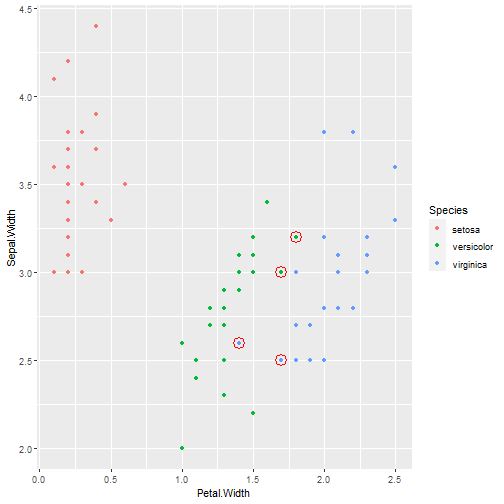

There are many different training models which have different accuracies. Now assume we have some data which we will be using to train our model. And test which one has a better result.
Mehran Behzad
There are many different training models which have different accuracies. Now assume we have some data which we will be using to train our model. And test which one has a better result.
We will be using the Iris data-set and some caret training methods. First the data is split in training and testing set, we will be using the training set to train our model and test it's prediction abilities on the remaining test set.
data(iris)
library(ggplot2)
library(caret)
library(dplyr)
set.seed(123)
inTrain <- createDataPartition(y=iris$Species,
p=0.5, list=FALSE)
training <- iris[inTrain,]
testing <- iris[-inTrain,]
Now the training:
mod = train(Species ~ .,data=training,method="rf")
p = predict(mod,testing);
We could look at the ourput results in the form of
table(testing$Species, p)
## p
## setosa versicolor virginica
## setosa 25 0 0
## versicolor 0 22 3
## virginica 0 2 23
But what if we had a visualization tool which not only shows us this information. But also allows us to see which region were the misidentifications.
We introduce our super duper shiny app which generates this plot for each training method that we choose:
correctPredictions = (p==testing$Species)
# mark misidentified
testing$correctPredicted <- correctPredictions
dplyr::filter(testing, correctPredicted == FALSE)
# the data
plot1 <- qplot(Petal.Width, Sepal.Width, colour=Species, data=testing)
# the misidentified
plot1 <- plot1 + geom_point(data = dplyr::filter(testing, correctPredicted == FALSE),
shape = 21, colour = "red", size = 5, stroke = 1)
Ta-dah!
